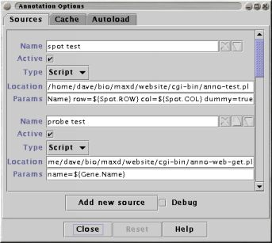

Annotation refers to any text which is associated with a Probe or Gene name. Annotation for a particular entity can be gathered from multiple sources (i.e databases like EMBL and SwissProt) and stored locally to reduce data loading times.
Annotation is displayed in the Annotation Viewer which is activated when you select "Display Annotation" in the main window's popup menu. The viewer also allows you to access the annotation loading options.
maxdView caches the annotation data as it is first loaded, this makes subsequent accesses faster. If you need to reload the data (because you have changed the data source for example) you have to empty the cache manually using the button in the loading options panel (see below).

The sources tab
in the loader options panel
You can change the order in which the sources are searched using the up and down arrows to the right of each source. The delete button (immediately to the right of the source name) permanently removes the source. To temporarily disable a source, uncheck the "Active" checkbox below the source's name.
Three type of data source are currently supported; Script, URL and File. Any number and mixture of these source types can be used to retrieve annotation for a given spot.
Each source is has the following controls:
The 'name' line is unimportant in the data gathering purpose - it is only used to refer the source. The use of the Location and Parameters controls depends on the type of the source and is explained in the sections below.
Script sources are programs which can be invoked to generate annotation
|
The full path and name of the script should be specified in the sources Location control, for example "/home/people/dave/bin/srs-wrap.pl". Parameters are passed to the script using variables which refer to the names or name attributes of the spot. All variable names begin with a '$' (dollar) character and are enclosed in curly braces '{}'. For example, the probe name associated with a spot is called "${Probe.Name}". Any attribute that a name has can be used as a variable, for example "${Gene.ACC_NO}" and "${Spot.ROW}". Any text in the argument list that is not recognised as a variable name is passed directly to the script. At least one variable must appear in the Parameters control for the source to be considered valid. Names that appear to be variable names but which cannot be matched with real attribute names will cause an error message to be displayed. Example: Calling the wgetz utility (from the SRS package) In the source's Location control specify
the full path and name of the
script: In the source's Parameters control specify the command-line
arguments to pass to the script: When the a request is made to the source, the ${Gene.Name} part of the argument list will be replaced with the actual gene name and the script will be invoked. If, for example, the gene is called 'Y1234' then the following command will be executed: Any text that the command produces (on either it's standard or error output streams) will be captured. |
URL sources represent a web servers which generate annotation in response to CGI requests.
Note: The HTTP POST method is used to send the parameters. This will not work with URL handling scripts that use the GET method.
|
CGI is the mechanism used to handle the forms commonly found on web sites. A request is sent to the URL named in the source's Location field along with the data in the Parameter control. Variables are used in exactly the same way as with script sources, see above for details. The Parameters must be in the correct URL encoded form. The encoding is the same as that used for specifying CGI parameters within a URL, for example: An easy way to discover which parameters to use and how to encode them is to use a web browser to access the annotation source 'manually'. The URL location displayed in the browser will show you how the Parameters should be defined. You do not need to specify the '?' character that separates the URL's location from it's parameters. For example, to access the above URL the source's Location would be: and the parameters would be
|
File sources are directories on a local filestore that contain annotation text.
|
Annotation is looked for in the directory specified in the source's Location. The file name will be generated using the source's Parameters value. If the path separator ('/' on Unix, '\' in MS-Windows) or a non-alphahumeric character occurs in a value specified for the file name, it is replaced with an underscore ('_') before the file is searched for. Example: Assume you have created files with names based on the position of a spot on it's array. Information about the spot at row X and column Y is stored in a file called "spot_X_Y.dat". A source to load this information would have it's Parameter set to: (this assume that you have created Spot name attributes called "ROW" and "COL" and populated them with values). Note: having tens of thousands of files in the same directory is likely to make your file system very unhappy. |
As data is loaded by a source it will be cached in memory. Next time the source is requested to load the same annotation, the data will be retrieved from the cache rather than it's real location.
Data is cached on a per-source basis, that is, each source stores it's data separately. If you change either the source's Location or Parameters, data cached for the old location or parameters will be ignored and the new data will be cached.
The entire cache can be written to and read from a file. This allows you to retrieve annotation one time only and save it between runs of maxdVIew.
The cache is controlled by a tab in the loader options panel, open this panel using the "Options" button in the Annotation Viewer.
The controls are:
A panel also displays some statistics about the amount of data currently in the cache. The "Hit Rate" shows how effective the cache is being.
The autoload feature attempts to load the annotation for all spots using threads running in the background. You can use this to retrieve annotation for a large number of spots as a one-off process and then save the cache (see above) for later use.
Autoload generates a load requests for all of the spots and the background threads consume these load requests one at a time. The status label informs you how many load requests are currently pending and how many threads are currently active.
See Also: